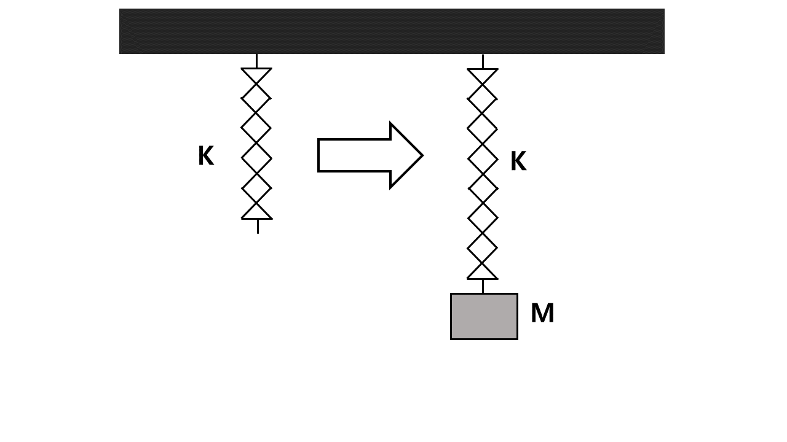

문제 3
용수철 상수 K인 용수철이 있다. 여기에 그림과 같이 질량 M인 물체를 매달았더니 물체는 상하로 왕복 운동을 하다가 용수철이 처음보다 약간 늘어난 상태에서 정지하였다. 이 과정에서 온도는 T로 일정하였으며 중력 가속도는 g이다. 용수철의 질량은 무시하자. (총 4점)
(1) 물체가 정지했을 때, 용수철의 늘어난 길이는 얼마인가?
(2) 이때, 용수철에 축적된 탄성에너지는 얼마인가?
(3) 용수철에 축적된 탄성에너지와 물체의 위치에너지 변화를 비교하시오.
(4) 처음 물체를 용수철에 매단 순간에서 최종적으로 물체가 정지한 상태 사이의 과정에 의한 우주 전체 엔트로피의 변화량과 변화방향 (증가 혹은 감소)을 구하시오.
